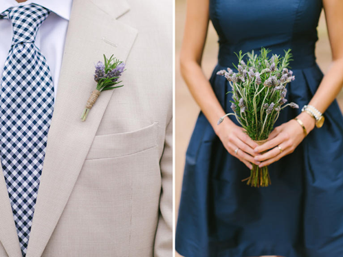
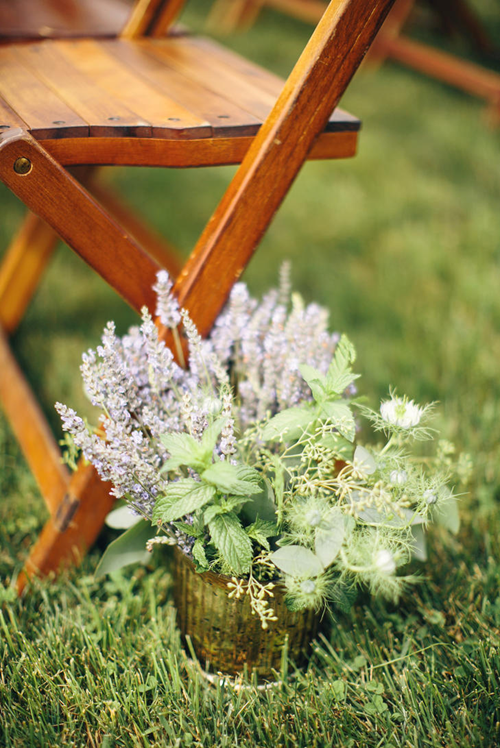
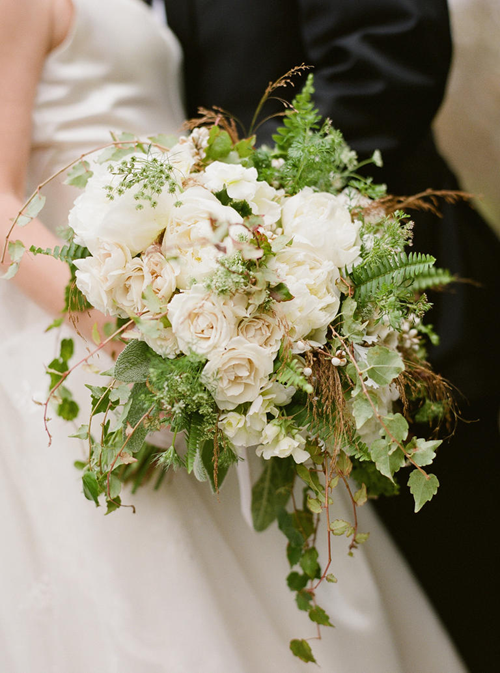
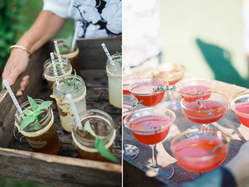
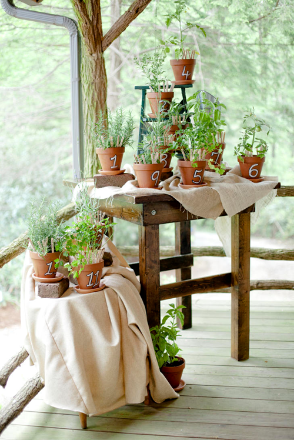
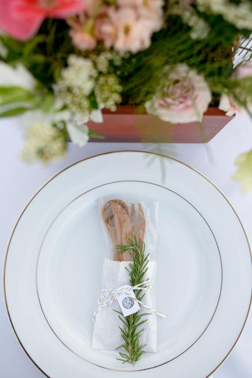
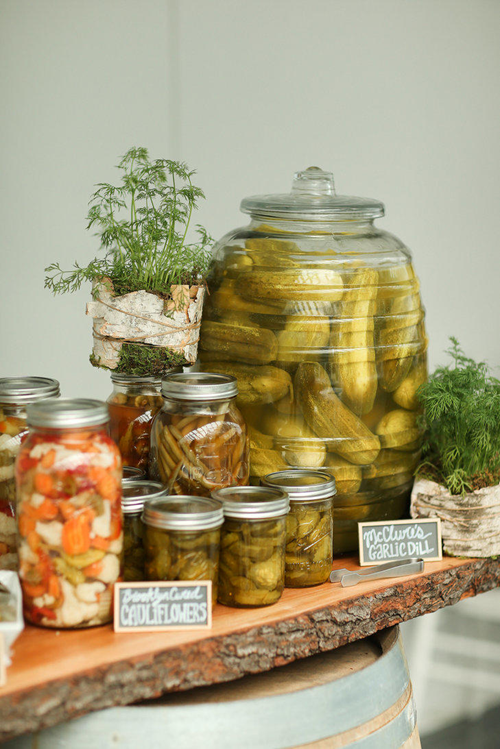

Эвкалипт не единственный вариант «зеленого» украшения.
Вам надоели клеше или Вы просто хотите добавить изюминку в оформление свадьбы? Хочется дополнить обычные украшения из цветков или вообще заменить их? Не каждому придёт в голову заменить цветы травами. Однако, растения бывают разных форм, размеров; своим приятным запахом (зачастую приятнее и сильнее запаха цветов) будут стимулировать обоняние гостей свадьбы.
Цветочные Альтернативы Свадьбы
Пару веточек лаванды с розмарином будут смотреться естественного и добавят приятного аромата бутоньерке и букету, а так же прекрасно сочетаться со свадебным платьем невесты.
Декор Междурядья
Горшечные растения идеально подходят для декорации открытого прохода между рядами - тяжелые горшки послужат якорем для растений, чтобы наверняка быть уверенным, что во время свадьбы кто-нибудь сломает или уронит их. Более того, они могут украсить ваше новобрачное гнездо после окончания свадьбы.
Букет
Есть очень много трав, которые можно использовать для декорирования красивого букета из листвы: петрушка, базилик, мята, розмарин, орегано - список можно продолжать бесконечно. Вы можете подобрать подходящий вариант, полагаясь на символическое значение каждой из трав, аромат и форму, чтобы дополнить другие цветы вашего букета и подчеркнуть красоту наряда. Только не переусердствуйте – учитывайте, что некоторые растения пачкаются, какие то аллергенны.
Гарниры
Решили угостить свих гостей после ЗАГСа коктейлем вместо обыденного шампанского? Добавьте листья маты или такие неожиданные варианты как тимьян, шалфей или вербена лимонная.
Нумерация столов
Хотите креативную идею декорирования свадебного застолья? Установите пронумерованные терракотовые горшки с растениями на каждый стол для удобства рассаживания Ваших гостей. Или используйте пакетики с семенами – это так же прекрасная идея декорирования свадьбы.
Декорация блюд
Небольшая ветка розмарина прекрасно украсит столовые приборы, тарелки и блюда. Так же можно использовать приборы из органических материалов, но учитывайте их ломкость и приготовьте запас.
Консервы

Как бы это не смешно звучало, но обычные бабушкины консервы можно преподнести таким образом, что они будут вполне уместны в современном застолье. Устройте импровизированный «мини бар» или «шведский стол» из красиво оформленных консервированных овощей – пусть каждый сделает свой салат или возьмет уже готовый.